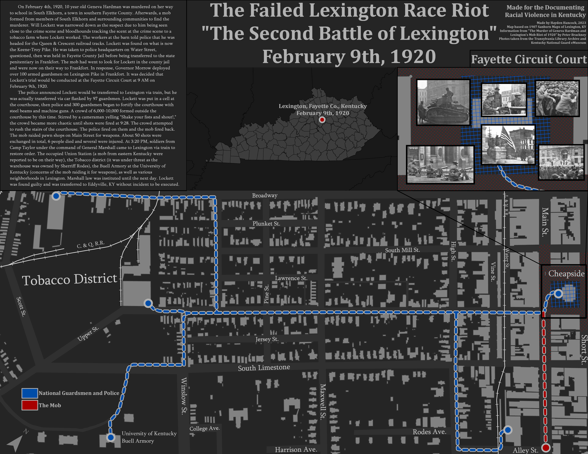
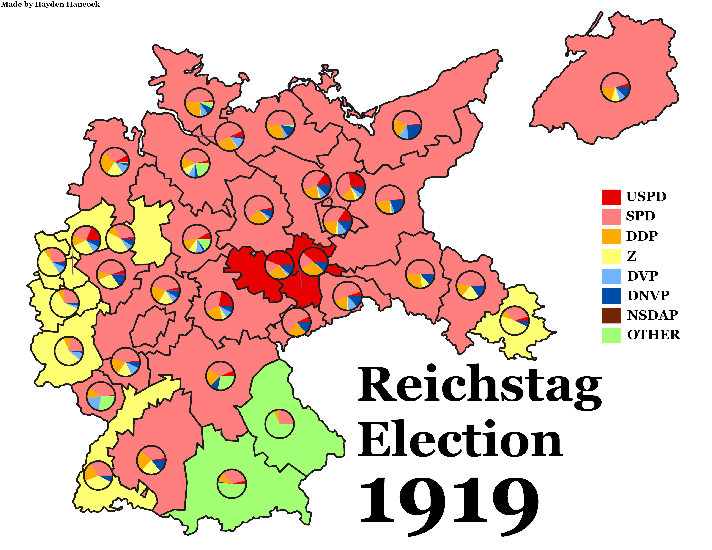
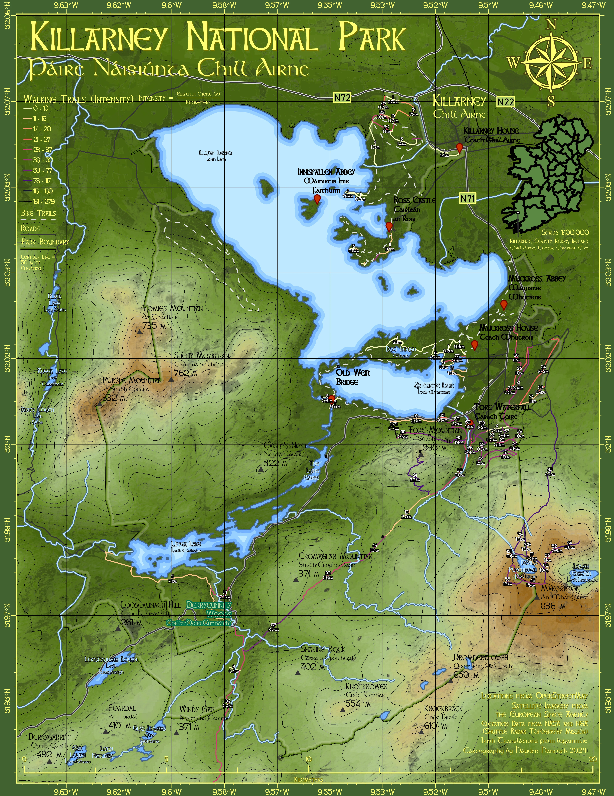

The Second Battle of Lexington
Documenting Racial Violence in Kentucky (Internship), Fall 2023
This internship tasked us with documenting instances of racial violence in Kentucky. While this was usually a case-by-case, person-to-person basis, in this project I got to track a larger incident that was a walk away from the UK campus. I got experience making a map based off an image, which I had to georefrence and trace (in this case, Sanborn Maps) as well as looking at multiple sources to see where certain things were (for example, the Tobacco Warehouse).

Wolf Creek Dam
Boyd Shearer, GEO 409 (Advanced GIS) Spring 2024
GEO 409 focused mostly on LiDAR and using ArcPy. CS 316 (Web Programming), which I was taking in the same semester as GEO 409, allowed me to format the final project page with HTML and CSS. This project focus a lot on how to make several different services work with your GIS data (Cesium Ion, Potree, etc.) and how to make this data accessible and understandable to the general population.
Urban Development and Rent in Lexington, KY
Mapshop (Internship) Spring 2024
In the Mapshop project, we were analyzing the change of rent prices between the US census tracts in Fayette County (Lexington, KY). Using some of the skills I learned in GEO 409, I focused on an aspect of the project that analyzed if urban development effected prices using changes in land cover and LiDAR height.

Weimar Republic Elections
Dr. Hamilton, HIS 499 Spring 2024
Th capstone paper for my History major was about analyzing the popularity of the KPD in the short-lived German (Weimar) republic. For this, I collected the data for each parties' Wahlkreise vote in each Reichstag election in a speadsheet and mapped them out, creating this informative graphic.


The New California Republic, 2280
Summer 2024
After the Spring 2024 semester ended, I created this map for fun. It's a map of the New California Republic, a faction vying for control in a post-apocalyptic America in the video game series Fallout. Even though the lore is fake, I still found this project to provide some useful experience in synthesizing sometimes conflicting information to find where places are geographically.
Páirc Náisiúnta Chill Airne (Killarney National Park)
Summer 2024
In anticipation of my upcoming trip to Ireland, I made a map of one of my planned destinations, Killarney National Park. I made sure to include Irish translations for most features on this map, as the Irish language is currently fighting endangermant.

"Exploring South Ireland" Storymap
Summer 2024
Made to get experience with StoryMap, just includes pictures from the trip. I was also able to GeoRefrence the map I made for Killarney to that section.

The Cumberland Mountains of Kentucky
Summer 2024
.png)
{kind=link}
.png){kind=link}
.png){kind=link}
{kind=link}
{kind=link}